SPLIT/09

首屏主視覺：以深夜都會柏油路面與冷冽藍光為基調，結合動態跑者攝影、高對比窄體標準字與路線訊息標記，完整保留人物、標誌與公里級別，定調「夜色不是終點，是起跑線」之核心精神。
Master Campaign Hero: Nocturnal asphalt meets electric cobalt hues. High-tension typography and dynamic runner kinetics define the core narrative: "The City Moves After Dark."
SPLIT/09 是以城市夜間路跑文化為背景的自主概念廣告企劃。視覺系統透過運動攝影、強烈的窄體字與路線資訊，讓 5KM EXPLORE、10KM CHALLENGE、21KM BEYOND 三種挑戰級別保有一致的品牌識別，同時能延伸至戶外媒體、社群廣告與活動數位介面。本案例展示廣告藝術指導、資訊編排與跨媒介視覺整合，不代表已舉辦的真實賽事。 SPLIT/09 is an independent concept campaign for urban night running, built around a single identity across three distance tiers—5KM EXPLORE, 10KM CHALLENGE, and 21KM BEYOND—and multiple advertising touchpoints. All routes, interfaces, and event applications are conceptual design demonstrations.
BRAND IDENTITY & GRAPHIC LANGUAGE
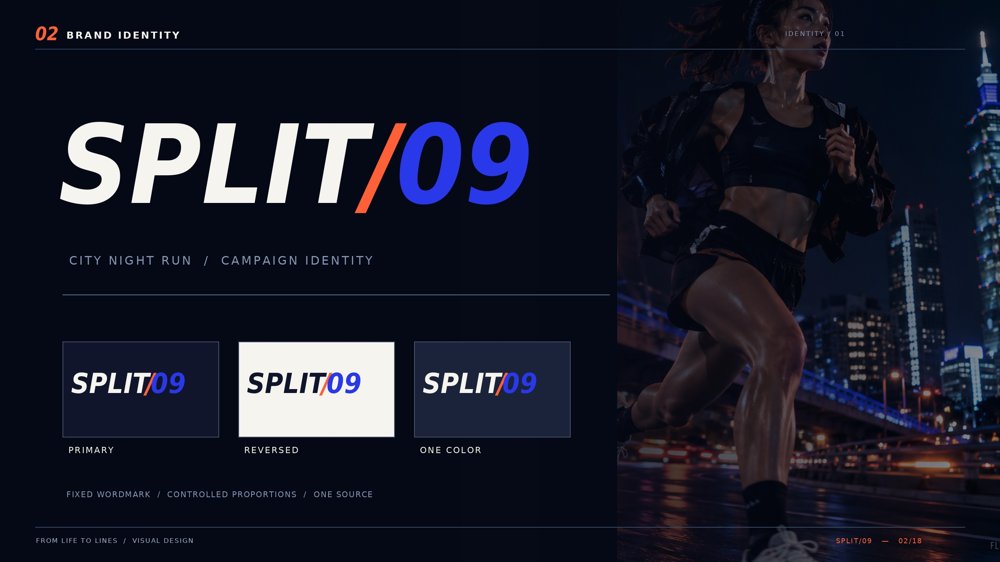
品牌識別核心：以標誌性的切分斜槓「/」象徵運動配速分段（Split Time）與晝夜交替的臨界點。幾何構圖結合信號警示橙與夜幕深藍，建立極具穿透力與辨識度的運動品牌符號。
Brand Identity: The dynamic forward slash "/" embodies split-second pacing and the urban threshold between day and night, paired with high-contrast signal orange on deep navy.
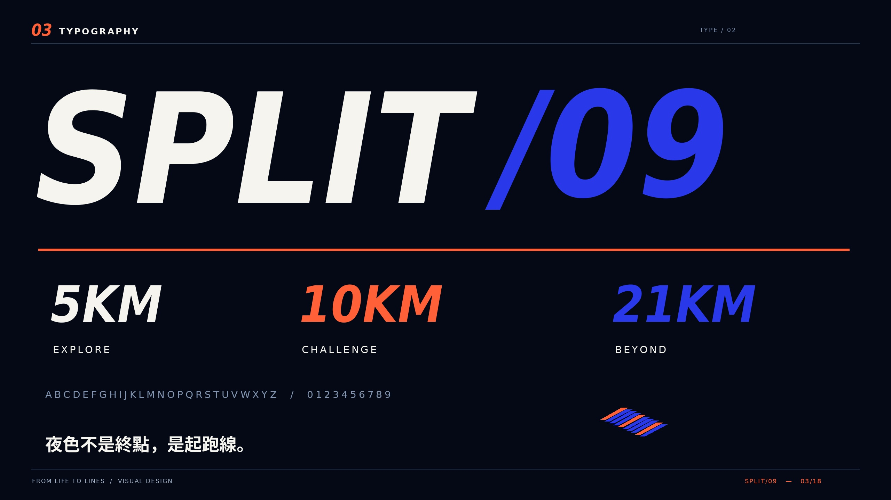
字體系統與距離層級：大型窄體無襯線字體（Condensed Grotesk）提供即時的速度感與視覺張力，搭配等寬數字（Monospace Numerals）呈現精確里程與時間記錄，中英混排兼具機能感與現代雜誌編輯骨架。
Typography System: High-tension condensed grotesk headlines paired with technical monospace numerals and geometric sans-serif Chinese characters, delivering athletic urgency and information precision.
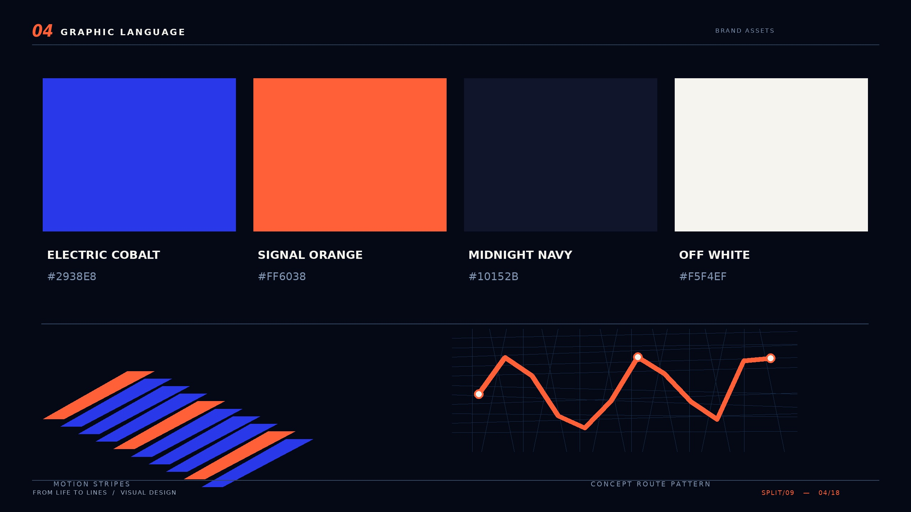
圖像語言與色彩架構：以四組核心色彩——午夜深藍（#10152B）、電光鈷藍（#2938E8）、信號警示橙（#FF6038）與暖白（#F5F4EF）為架構，結合 45° 速度引導線與瑞士國際網格，展現冷靜精準的運動工程美學。
Graphic Language & Color Architecture: Built on four core tokens (#10152B, #2938E8, #FF6038, #F5F4EF) articulated through 45-degree speed vectors and Swiss grid modules.
DISTANCE TIERS & INFORMATION DESIGN
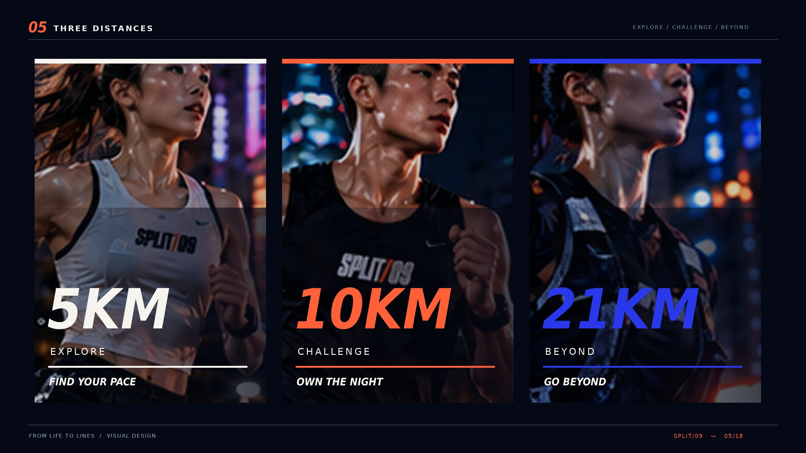
三種挑戰級別視覺：5KM 城市探索（EXPLORE）、10KM 極限挑戰（CHALLENGE）、21KM 突破自我（BEYOND）。各級別透過色彩比重與圖形密度的遞進，傳遞不同階層跑者在夜色中的專注與爆發力。
Three Distances: 5KM EXPLORE, 10KM CHALLENGE, and 21KM BEYOND. Visual differentiation achieved through progressive color weighting and graphic density.
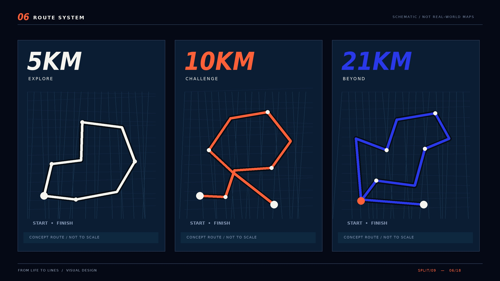
概念路線示意網絡：將都會高架橋、河濱親水步道與歷史街區串聯成環狀夜跑動線，標註補給站、計時段與急救點。
Concept Route System: Mapping urban flyovers, riverside boulevards, and historic districts into nocturnal circuits with checkpoints and aid stations.
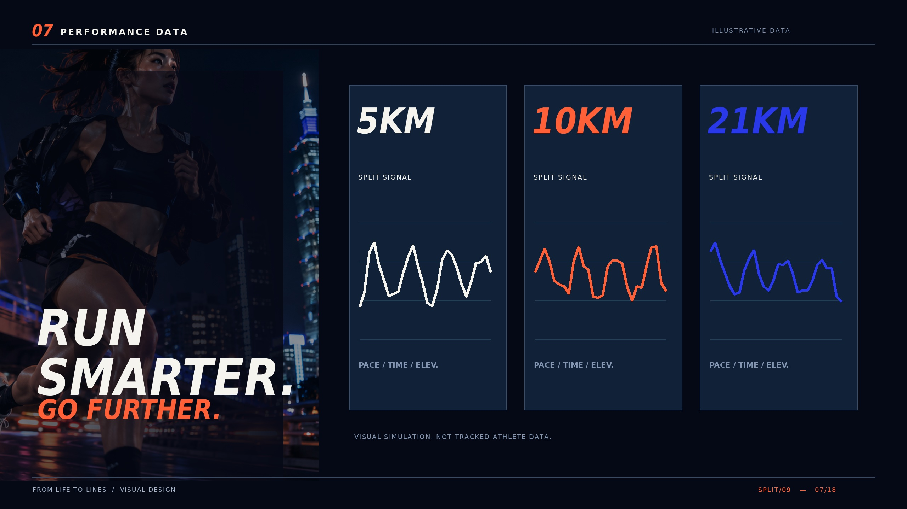
資訊設計示意：整合心率區間、平均配速（Pace）、海拔爬升與配速分段差（Split Time）。深底高亮資訊架構，提供夜間快速辨讀的高效介面語彙。
Performance Data Interface: High-contrast telemetry interface synthesizing heart rate zones, split times, elevation profiles, and pace metrics.
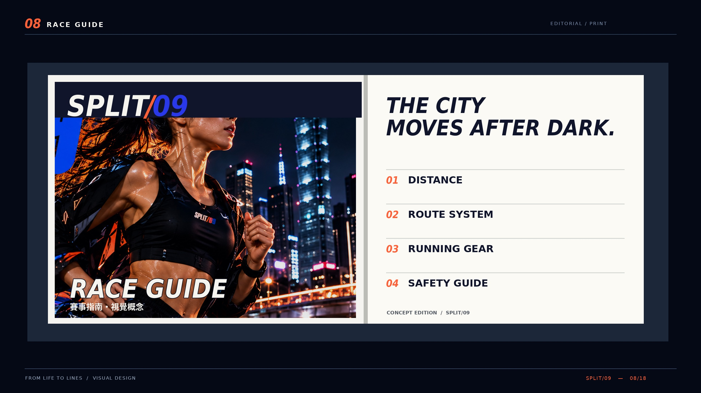
運動參與指南編輯設計：融合日系雜誌編輯嚴謹度與運動手冊結構。封面高彩度印刷，內頁規劃賽事時程、裝備檢核、夜間安全守則與概念摺頁路線地圖。
Race Guide Publication: Japanese editorial layout meets athletic handbook structure, housing schedule run-downs, mandatory gear checklists, and night safety protocols.
OUTDOOR MEDIA & SOCIAL CAMPAIGN
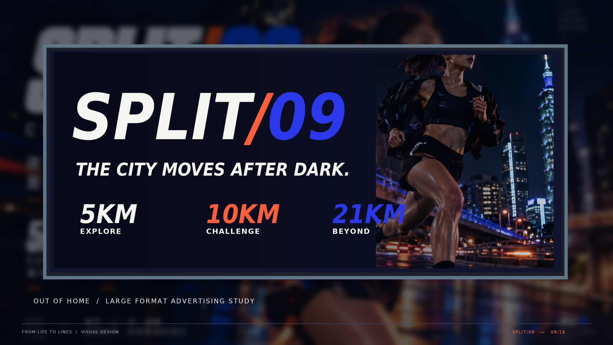
看板視覺應用模擬：模擬於都會主幹道之大型戶外視覺應用，不等同已在真實道路刊登。以強烈夜色背景結合高彩度霓虹藍與信號橙，呈現極具穿透力與號召力的視覺焦點。
Billboard Visual Application Simulation: Conceptual large-format street-level advertising simulation along urban arterial corridors. Not an actual media placement.
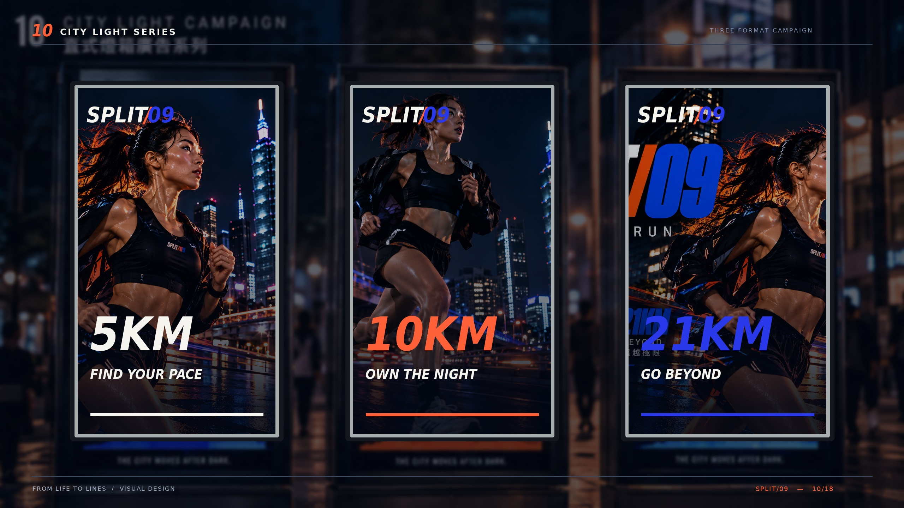
街角燈箱海報三聯系列：公車站候車亭與人行道三聯式燈箱應用。透過三種不同跑者姿態與距離數據的連貫編排，讓城市街角成為夜跑文化的展覽長廊。
City Light Series: Tri-panel illuminated poster modules sequenced to create an immersive urban gallery of nocturnal athletic spirit.
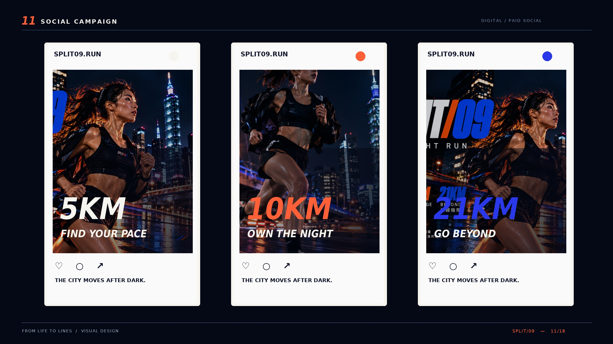
社群廣告系列設計展示：針對社群限時動態與資訊流規劃的直式與方型版面。以破格排版、強烈計時數字與倒數提示，引導跑者社群互動。
Social Campaign: Vertical story layouts and square feed modules featuring dynamic typographic hierarchy, milestone count-ups, and engagement hooks.
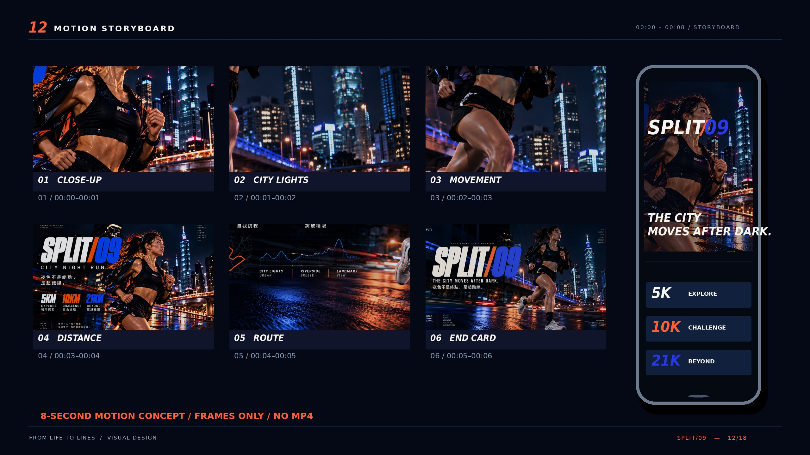
8 秒動態廣告概念分鏡，僅提供靜態分鏡，未製作 MP4：規劃 8 秒動態概念短片的鏡頭語言。從夜間城市心跳聲、跑鞋踏地特寫，到高架橋下穿梭的光影與最終品牌標語定格。
8-Second Motion Concept Storyboard (Static Frames Only / No MP4): 8-second conceptual teaser narrative storyboard capturing shoe strike close-ups, arterial light trails, and the climatic brand lockup.
DIGITAL PLATFORM & REGISTRATION UX
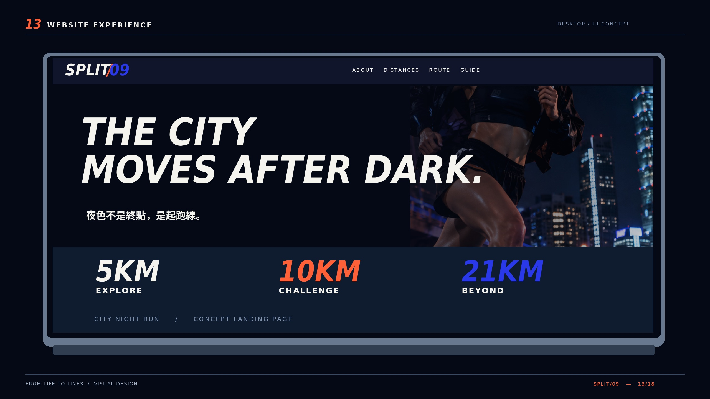
概念桌機網站畫面：俐落深色介面設計。首頁整合倒數計時、路線互動導覽、名額進度與即時天氣情報，提供沉浸式數位探索。
Website Experience: High-performance dark UI framework presenting race registration countdowns, route map explorers, and low-light ambient atmospheric widgets.
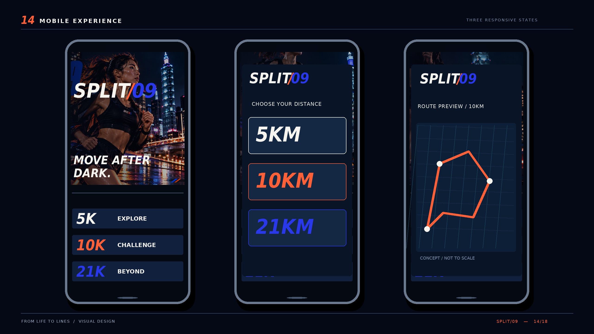
概念手機版介面與路線檢視：針對行動跑者打造的豎屏體驗。包含單手拇指熱區操作、夜間高對比路線地圖、個人配速計算器與數位號碼布展示。手機外框嚴格保持精準比例，無溢出或變形。
Mobile Experience: Ergonomic thumb-zone architecture for handheld navigation, high-contrast night mapping, and digital bib pass generation.
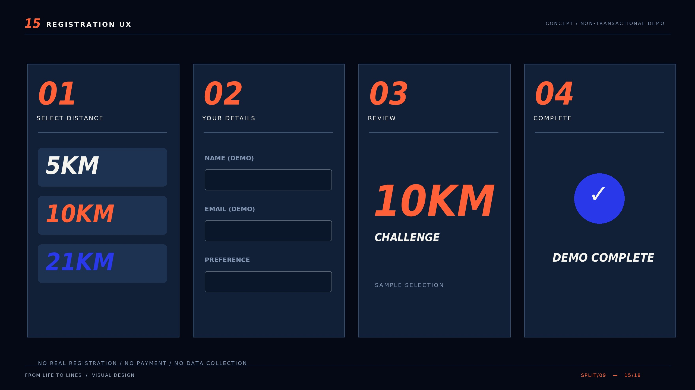
概念報名體驗與流程規劃：簡化多層級賽事報名體驗。跑者可挑選組別、輸入虛擬暱稱與目標完賽時間，即時在記憶體中生成專屬概念選手卡。
Registration UX: Frictionless multi-step registration flow. Select distance tiers, input test runner handles, and generate a client-side virtual runner pass in-memory with zero backend transmission.
PHYSICAL TOUCHPOINTS & SHOWCASE
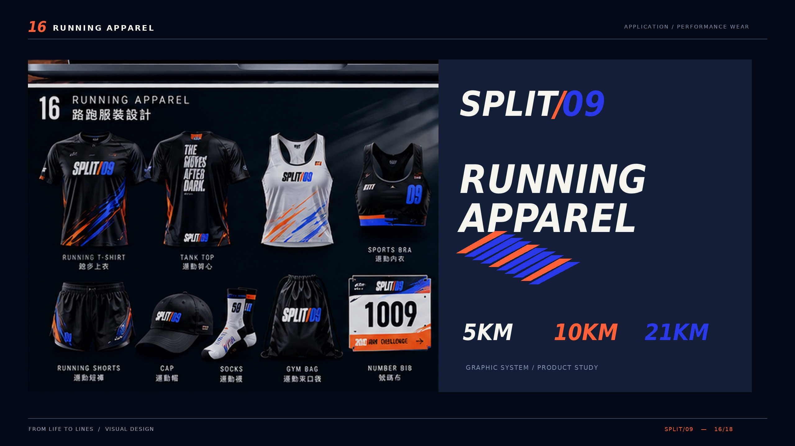
服裝應用設計：以反光材質視覺概念、透氣網眼織紋與信號橙拉鍊細節呈現賽事限定風衣、跑感 T-Shirt 與反光臂套，尚未打樣或量產，探索夜間跑者安全機能與運動品牌美學。
Running Apparel Design: Reflective visual concept, technical mesh textures, and signal orange detailing for windbreakers, performance tees, and armbands. Conceptual exploration, not sampled or mass-produced.
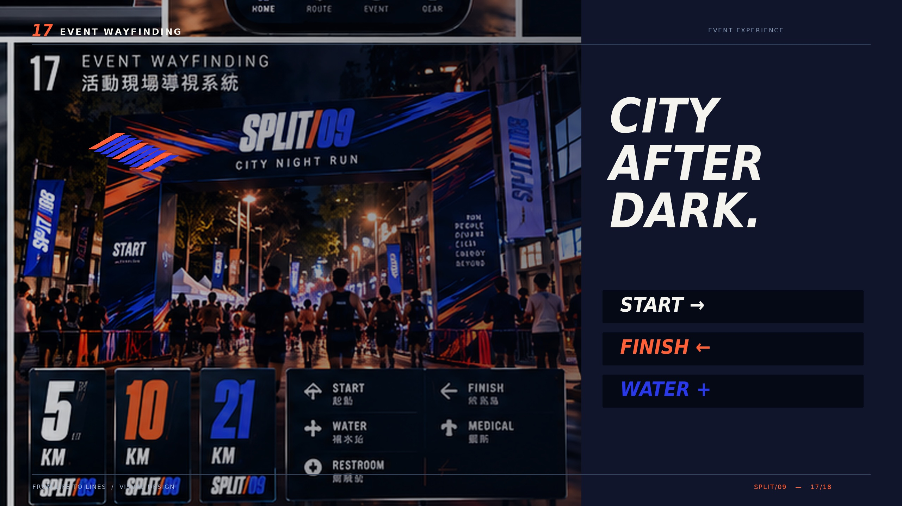
活動導視系統：針對夜間低光源環境設計的高能見度指示牌、起終點充氣拱門、公里數發光立牌與置物區動線引導。
Event Wayfinding: Luminous distance markers, high-contrast checkpoint gates, and directional pylons engineered for rapid navigation under stadium floodlights.
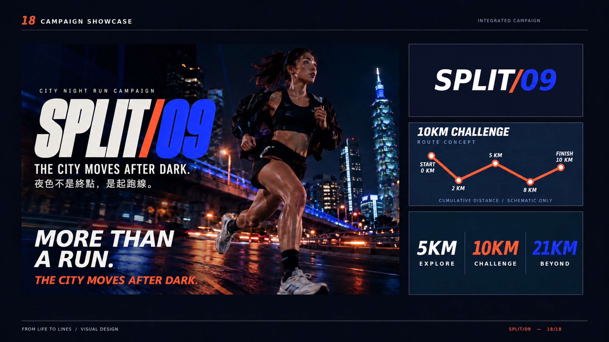
結尾整合視覺：SPLIT/09 展現了從核心品牌識別、國際主義網格編排、跨媒介戶外與社群廣告，到全端數位體驗的完整整合能力。夜色不是終點，是品牌敘事的起跑線。
Campaign Showcase: A unified demonstration of integrated art direction, Swiss typographic discipline, and cross-media design coherence. The city moves after dark.